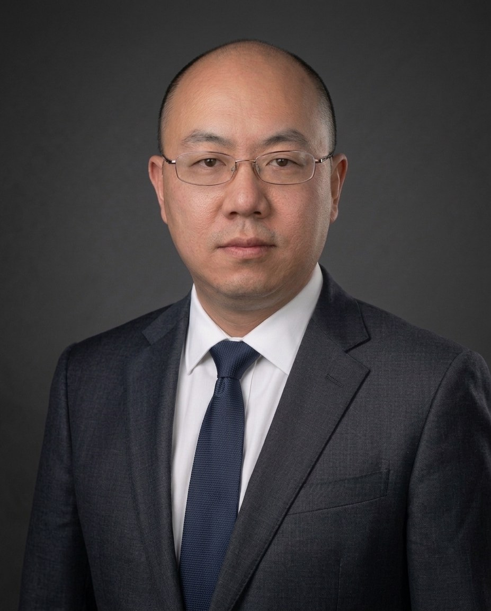
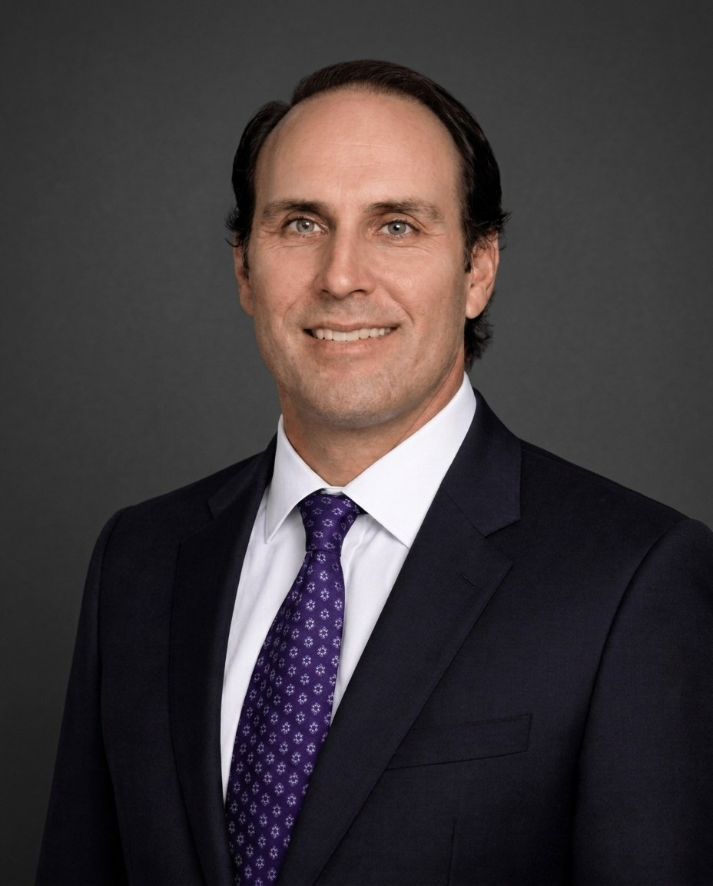
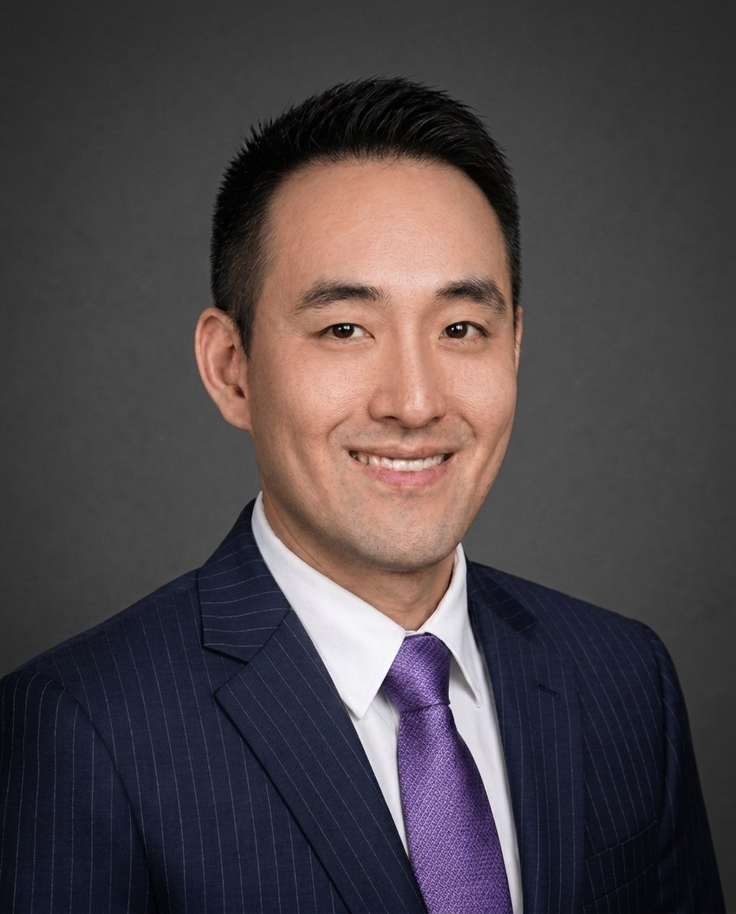

Experience in China credit
Since 2004Leadership & Investment
Firm leadership and investment professionals responsible for governance, origination, underwriting, structuring, execution and portfolio management across ShoreVest’s private credit strategies.
Benjamin Fanger
Managing Partner & Founder
Benjamin Fanger is the Managing Partner and Founder of ShoreVest Partners and a pioneer in China’s private credit markets. He has managed over $2 billion in the space, invested by institutions from all over the world, and sits on ShoreVest’s Investment Committee. In over 20 years of Chinese private credit experience, Mr. Fanger has worked to create credit-focused solutions with countless asset sellers, borrowers, and financial institutions in China. Prior to founding ShoreVest and Shoreline Capital, Mr. Fanger started several companies, two of which he sold to public companies. During graduate school, he also worked at the law firm O’Melveny & Myers on early Chinese distressed debt and private equity transactions, as well as the first foreign-purchased NPL portfolio in China in 2003. Mr. Fanger has been fluent in spoken and written Chinese for over 30 years. He also holds a JD and MBA from the University of Chicago and is a licensed attorney in the State of California.
Mecy Mei
Partner
Ms. Mei is a Partner at ShoreVest. She also sits on the Investment Committee. Prior to ShoreVest, she was a Partner at Shoreline Capital where she served for eight years. Her investment experience runs the full spectrum of Chinese private credit investments. Ms. Mei has overseen the successful completion of numerous deals, from deal sourcing, due diligence, deal structure to acquisition/negotiation and monitoring and exits. Prior to ShoreVest and Shoreline Capital, Ms. Mei worked at Morningstar as a fund analyst where she focused on fund strategy analysis. In that capacity Ms. Mei worked closely with outside clients in creating portfolios of debt and equity in China. She holds a bachelor’s degree in economics from Hefei University of Technology and a master’s degree in economics from Nanjing University. She was awarded the CFA designation in 2018.
Hui Zheng
Partner
Ms. Zheng is a Partner at ShoreVest. She also sits on the Investment Committee. Prior to ShoreVest, she was a Partner at Shoreline Capital where she served for eight years. Her investment experience runs the full spectrum of Chinese private credit investments. Ms. Zheng has overseen the successful completion of numerous deals, from deal sourcing, due diligence, deal structure to acquisition/negotiation and monitoring and exits. Prior to ShoreVest and Shoreline Capital, Ms. Zheng was involved in the liquidation of non-performing loan assets when she was with a Guangdong law firm as an attorney. Ms. Zheng has published several papers including “Negative Impacts the New Bankruptcy Law has on the Liquidation of Non-performing Assets.” She holds a law degree from Nanchang University of Law and holds an LLM in economic law on foreign business from Sun Yat-sen University School of Law.
Ada Bi
Partner & Chief Financial Officer
Ms. Bi is a Partner and the Chief Financial Officer of ShoreVest. She also sits on the Investment Committee. She oversees the firm’s finances, tax, fund reporting, cash management, and invested projects’ financial control, and as such has overseen structural operational elements of numerous deals. Prior to joining ShoreVest, Ms. Bi was the CFO at Shoreline Capital from 2008 until 2016. Prior to 2008, Ms. Bi was the Head of Finance for AIG Insurance Company in charge of financial reporting, treasury, tax and budgeting for the property and casualty arm of AIG in China. She also worked previously for CITIC-Prudential and Royal Bank of Canada. Ms. Bi is a Fellow member of the Association of Chartered Certified Accountants, as well as a member of Chartered Professional Accountants (Canada) and holds a bachelor’s degree in international trade from Guangdong University of Foreign Studies in Guangzhou, China.
Shanjuan Jiang
Partner
Ms. Jiang is a Partner at ShoreVest and an observing member of the Investment Committee. Prior to ShoreVest, she worked in private equity investments at CICC (China’s largest investment bank), CalPERS, and Franklin Templeton’s China alternatives business. Ms. Jiang holds a PhD in Mechanical Engineering from UCLA and an MBA from UC Davis. She also has a Bachelor of Science from Tsinghua University.
Lillian Xu
General Counsel
Lillian Xu serves as General Counsel of ShoreVest, overseeing all legal matters across the firm’s investment activities and fund operations. She brings more than fifteen years of specialist legal experience, with a practice focused on legal due diligence for alternative investments — the discipline most critical to a firm that acquires complex, multi-layered distressed credits in the Chinese market. Within the investment process she leads legal structuring and documentation, manages regulatory and compliance matters, and assesses the enforceability and counterparty risk that sits at the heart of underwriting distressed and special-situations credit; her involvement runs the full life of an investment, from diligence and acquisition through to resolution and exit. Prior to ShoreVest, she trained and practiced at multiple red circle law firms in China, the tier of elite domestic practices whose deal experience and institutional relationships define the upper end of PRC legal work.
James Li
Director of Capital Solutions
James brings more than a decade of investment and advisory experience on Wall Street to ShoreVest’s credit-focused solutions function. He has advised on corporate restructurings and special situations as an investment banker at Perella Weinberg Partners, and previously served as a portfolio manager at Citi. His expertise in structuring and executing complex financial transactions across challenging mandates directly supports the implementation of ShoreVest’s China private credit strategy.
Yao Fu
Senior Investment Manager
Yao Fu is a Senior Investment Manager at ShoreVest with over eight years of experience at the firm, where he focuses on investment opportunities across Hong Kong and Southwest China. Prior to joining ShoreVest, Yao spent three years as a Senior Auditor at Deloitte’s Guangzhou branch, developing a strong foundation in financial analysis and risk assessment. Yao holds a degree in Professional Accounting from Macquarie University and is a Fellow Member of the Association of Chartered Certified Accountants (ACCA).
ShoreVest Asset Solutions
ShoreVest’s onshore asset-servicing and resolution platform, supporting local execution and credit recovery across China.
Daoping Yang
Managing Director, ShoreVest Asset Solutions
Mr. Yang is a Managing Director and a head of Eastern China at ShoreVest Asset Solutions, or SAS (ShoreVest’s captive servicer platform, which manages the servicing of distressed assets for the ShoreVest funds across China). He is a seasoned senior executive in China; since 2015 Mr. Yang has worked on alternative investments focused on NPLs, real estate and energy. Prior to 2015, Mr. Yang spent twenty years as an executive at Sinopec, responsible for various aspects of global and regional supply, pricing, and trading. Mr. Yang holds an MBA from China Renmin University and has studied at Georgia Institute of Technology.

Hongyu Wei
Managing Director, ShoreVest Asset Solutions
Hongyu Wei is a Managing Director based in Beijing at ShoreVest Asset Solutions, or SAS (ShoreVest’s captive servicer platform, which manages the servicing of distressed assets for the ShoreVest funds across China). His career spans over 20 years in distressed asset management, loan recovery, and illiquid credit in China, with firms such as Nomura International Hong Kong, Deutsche Bank’s Global Markets Special Investments Group, Lone Star Funds, CarVal Investors, and Kaili Assets Management (the local Chinese NPL servicer formed by Morgan Stanley to service the first foreign-purchased NPL portfolio in China). At ShoreVest, Mr. Wei focuses on sourcing, onshore borrower engagement, collateral-level resolution, and cross-border enforcement opportunities across ShoreVest’s China portfolio. He holds a Master of Finance from the University of International Business and Economics and completed an Executive MBA jointly through UCLA Anderson and the National University of Singapore.
Finance, Risk Management
& Human Resources
Risk management, valuation governance, finance, reporting and people functions supporting ShoreVest’s investment platform.
Louisa Ho
Senior Accountant
Louisa Ho is a Senior Accountant at ShoreVest, where she is responsible for budgeting, financial reporting, tax compliance, fund reporting and day-to-day accounting. She also supports annual audits and investor tax reporting and serves on the firm’s Valuation Committee.
Before joining ShoreVest in 2016, Louisa spent eight years at Rock Mobile Corporation, progressing from Accountant to Finance Manager. She holds a Bachelor of Accountancy from Jinan University and has completed the professional stage of the Chinese CPA examination.
Esther Li
Risk Control Specialist
Esther Li is a Risk Control Specialist at ShoreVest. Independently from the investment teams at ShoreVest, Esther coordinates risk-focused due diligence and quality control for all opportunities being submitted to the Investment Committee. Drawing on her combined financial and legal training, she reviews financial models and investment memoranda, assesses legal, market and credit risks, and helps develop appropriate risk-mitigation measures in advance of Investment Committee review.
Before joining ShoreVest, Esther worked as an Investment Analyst and Accountant at Sinohydro Corporation Engineering Bureau 15, where she conducted due diligence, financial modeling and investment analysis for infrastructure projects. She holds a Master of Finance and a Bachelor of Economics from Sun Yat-sen University and has professional qualifications in accounting, law, taxation and securities.
Charlotte Lan
Human Resources Manager
Charlotte Lan is Human Resources Manager at ShoreVest, where she oversees the firm’s human resources and administrative functions. Her responsibilities include recruitment, compensation and benefits, performance management, training, employee relations, organizational planning and day-to-day administration.
Before joining ShoreVest, Charlotte held human resources and administrative roles at Guangdong Yonyou Software, Baidu China and Guangdong Fengle Group. She holds bachelor’s degrees in Finance and English Literature from Southwest University for Nationalities.
Client Solutions
Institutional investor relationships across Asia-Pacific, the Americas and EMEA.

John Jones
Director of Client Solutions, Americas & EMEA
As Director of Client Solutions, Americas & EMEA, Mr. Jones leads client engagement across the Americas, Europe, the Middle East and Africa. With over 15 years of experience, he has directed business development efforts across public and private credit investment strategies. He was previously a member of PIMCO’s FIG business and provided asset management and advisory services for insurance company general account investments. He also worked with two emerging systematic alternative managers focusing on corporate strategy and fundraising. Mr. Jones earned a BA in economics from the University of Southern California and an MBA from The University of Chicago. While pursuing his undergraduate degree, he spent two years as a volunteer on a Mandarin speaking service mission for his church.

Kelvin Chan
Director of Client Solutions, Asia-Pacific
Kelvin Chan leads ShoreVest’s client engagement across Asia from Hong Kong, having joined the firm in December 2024. His career spans nearly two decades across private equity, venture capital, strategic investment, and financial advisory in Greater China and Southeast Asia. He developed Ping An Group’s overseas private equity platform at Ping An Asset Management in Hong Kong, served as Executive Director of Strategic Development at Fosun Hani Securities, and was Investment Director for International Investment at Ant Financial, where he led global initiatives across payments, fintech, and emerging technology. Most recently he was Associate Director of Strategic Development at 500 Global, covering deal analysis, investor relations, and exit strategy for its Southeast Asia Growth Fund.
Senior Advisors
Senior advisors providing strategic, market and policy perspectives to the firm.

Michael Chang
Senior Advisory Partner
Michael Chang is a Senior Advisory Partner at ShoreVest. In this role, Mr. Chang advises on ShoreVest’s human resources, information technology, finance, and compliance departments. He brings over a decade of experience in investment management in the United States and Asia, having worked at Stamos Capital Partners, Bridgewater Associates, and Cambridge Associates. He holds an MBA from MIT Sloan and a BA from Stanford University.
Philip Young
Senior Advisory Partner
Philip Young is a Senior Advisory Partner at ShoreVest, working with the firm to advise on investment strategy and business development. Previously, Philip was an Independent Director at TransGlobe Life Insurance Company in Taiwan. He also served as a Senior Advisor in several wealth management companies in China. Earlier in his career, Philip directed investments of various Chinese and Japanese insurance companies. Years of working in the financial industry in Greater China and the Asian region give him a deep-rooted network in the senior management of the industry and broad knowledge of the Asian capital markets. He interacts with the traditional and alternative assets outside the region as well. Philip holds a BS degree from National Taiwan University and an MBA from University of Chicago. He also has a Diploma in International Investment from Stanford University. Philip currently teaches in the Finance Department at National Taiwan University in Taipei and the Institute for China Business of Hong Kong University. In addition, he authored “The Essence of Wealth Management,” published in 2022.
Steve Poon
Senior Advisory Partner
Steve Poon has spent more than twenty years building and leading credit investment platforms across Asia, accumulating a career that tracks the full arc of institutional private credit in the region. He moved from structured solutions at Standard Chartered Bank, to heading China special situations at Société Générale, to building and leading Ping An’s institutional private credit investment team over approximately a decade, to serving as Managing Director of Asia Credit at The Carlyle Group in Hong Kong. At Carlyle, Poon led the firm’s Greater China-focused credit platform before departing in late 2022. His advisory contribution to ShoreVest draws on an unusually complete accumulation of experience — from origination and structuring through portfolio management and credit resolution — across every major phase of China’s credit cycle. Earlier in his career he held roles at BNP Paribas Peregrine and Bank of America Merrill Lynch. He holds an MBA from the University of Sheffield and is an Associate Member of the Institute of Chartered Accountants of England and Wales (ACA, ICAEW).
Dinny McMahon
Economic Advisor
Dinny McMahon is an Economic Advisor to ShoreVest, working with the firm to analyze the dynamics of China’s credit markets, and assisting the investment committee in its strategic directions. In this role, Dinny actively analyzes the state of China’s commercial banking system, the volume and nature of the banks’ non-performing loans and clean-up efforts, as well as other macroeconomic matters affecting ShoreVest’s deal sourcing and execution. Dinny McMahon spent ten years as a financial journalist in China, including six years in Beijing with The Wall Street Journal, and four years with Dow Jones Newswires in Shanghai, where he also contributed to the Far Eastern Economic Review. In 2015, he left China and The Wall Street Journal to take up a fellowship at the Woodrow Wilson International Center for Scholars, a think tank in Washington DC, where he wrote “China’s Great Wall of Debt: Shadow Banks, Ghost Cities, Massive Loans, and the End of the Chinese Miracle,” a book about the Chinese economy that was published in 2018. Until recently he was a fellow at MacroPolo, the Paulson Institute’s think tank, where he wrote about China’s efforts to clean up its financial system. Dinny currently does research on China’s financial system for financial services firms. Dinny is fluent in Chinese, having studied the language in Beijing and Kunming, followed by a year at the Johns Hopkins SAIS campus in Nanjing where he studied international relations in Chinese.